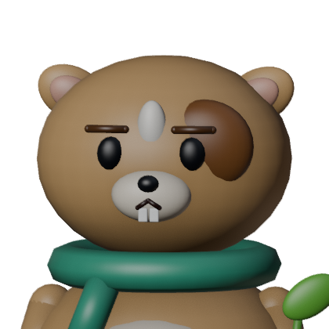
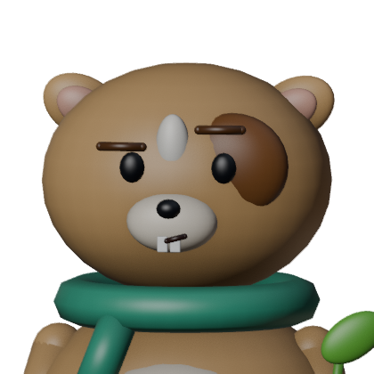
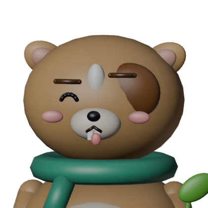

보리 대화 서버(LLM)가 대사마다 보내는 표정 그대로야. 대화창에서 보리가 말할 때마다 얼굴이 바뀌고, 고개·팔 몸짓도 같이 붙여.

보통neutral평소 수다
curious눈썹 위로, 눈 커짐 · 고개 갸웃
concerned눈썹 가운데가 올라감 · 고개 살짝 숙임
happy웃는 눈, 벌린 입, 볼터치 · 통통 뜀

생각thinking눈 위로, 한쪽 눈썹 · 팔을 턱에

장난playful윙크, 혀 내밀기
tired반쯤 감은 눈 · 천천히 흔들림